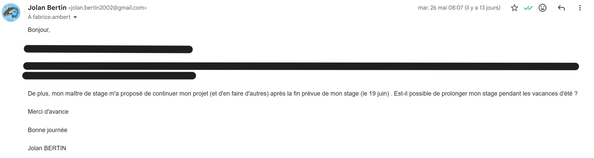

Jolan BERTIN S4A1
jolan.bertin@edu.univ-fcomte.frSavoir-faire intégration en entreprise
Cette partie permet de présenter comment j'ai été encadré, je me suis intégré ainsi que les propositions que j'ai pu faire au sein de l'équipe.
S'intégrer dans une équipe


Trace 20 : Mail de demande de prolongation de stageMon intégration dans l'entreprise s'est bien passée. Celle-ci a beaucoup été facilitée par l'équipe très avenantes. En effet, dès mon arrivée, je me suis présenté à toutes les personnes présentes ce jour là et ai directement été ajouté dans le groupe WhatsApp de l'équipe.
De plus, les membres de l'équipe mangent souvent ensemble, et donc moi aussi.
Aussi, l'entreprise étant présente sur plusieurs sites : Aurillac (15), Entraygues-sur-Truyère (12) et à Paris (75), j'ai aussi eu l'occasion de me déplacer sur plusieurs agences (mais pas en région parisienne car étant trop éloigné d'Aurillac). Cela m'a permis aussi de rencontrer le personnel présents sur plusieurs sites.
Enfin, reconnaissance de mon travail ainsi que ma bonne intégration, Bruno m'a proposé de prolonger mon stage pendant les vacances d'été. Cependant, la demande au sein de l'école n'a pas été acceptée.